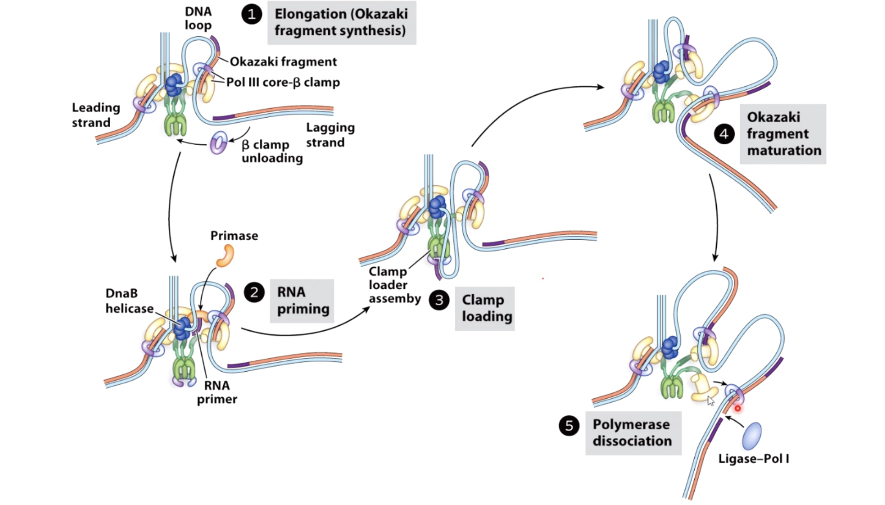

DNA Replication
DNA replication is the process by which a duplicate copy of genetic material is made before cell divides. The steps in replication are highly conserved in all organisms.
Three Phases
- Initiation
- DNA helicase: The double strand will be open at the origin of replication to allow access by mahcinary that will copy the DNA. The opening is regulated by series of initiation regulatory proteins not shown here. Once open a DNA helicase ring of six subunits is loaded onto one strand of the DNA at each side of the replication bubble. This establishes two replication forks that will move away from each other as replication proceeds.
- DNA polymerase: The synthesis of DNA is catalyzed by an enzyme called DNA polymerase. However, DNA polymerase cannot start a new strand from scrach. Instead, they can only elongate an existing polymer of DNA or RNA. A primer sequence needs to be made from which DNA polymerase can continue its synthesis.
- Primase: The primase synthesis a small strech of RNA by copying the sequence of nucleotides on the template strand. A DNA polymerase will later elongate the small RNA strech.
- Loading DNA polymerase onto the DNA. The first component that is loaded is the sliding clamp. A ring shaped structure that binds at the three prime end of the newly made RNA primer to get onto DNA and encircle it.
The clamp is loaded by a clamp loader complex. Five protein clamp loader complex bind to the sliding clamp and binding of ATP allows opening of the sliding clamp ring. The opened ring then encircles the template primer junction at the three prime end. Interaction with the 3 prime end of the DNA stimulates ATP hydrolysis and the clamp loader dissociates from the DNA to be replaced by the replicated DNA polymerase. The 3' end of the primer is positioned in the polymerase active site
- DNA helicase: The double strand will be open at the origin of replication to allow access by mahcinary that will copy the DNA. The opening is regulated by series of initiation regulatory proteins not shown here. Once open a DNA helicase ring of six subunits is loaded onto one strand of the DNA at each side of the replication bubble. This establishes two replication forks that will move away from each other as replication proceeds.
- Elongation
- The replication bubble gets bigger as the helicase move apart establishing two replication forks that move in opposite directions. The sliding clamp and polymerase unit at each replication fork moves along the DNA as the helicase unwinds the double=stranded DNA to expose single strands.
- Polymerase are loaded to both top and bottom DNA strands at the fork because polymerases only sythesis DNA in the 5' to 3' direction, the teo strands must be copied in opposite directions.
- The bottom strand in this fork is the leading strand. The polymerase on this strand moves continuesly from left to right synthesizing DNA as it travels.
- The top strand is the lagging strand on which just a short strech of DNA is made by the polymerase elongating in the 5' to 3' direction. After synthesizing this short stretch of DNA, the polymerase raised then dissociates and the new polymerase binds at the fork to elongate the next RNA primer so priming at elongation are happening repeatedly on the lagging strand .At the replication fork moves along the DNA, synthesis is discontinuous. The short streched of DNA that are made on the lagging strand are called Okazaki Fragments.
- When the lagging strand polymerase runs up against a previously made Okazaki fragment while in the process synthesizing DNA. The replicative DNA polymerase 3 is replaced by DNA polymerase 1, which is 5' to 3' exonuclease. This exonuclease degrades the RNA prime in front of it, synthesizing DNA as it goes. Once the RNA is removed the two sections of DNA are joined by DNA ligase. Now the lagging strand has been elongated by one more Okazaki fragment.
- While this view of the replication fork is easiest to understand. In reality, the leading and lagging polymerases are coupled and moving concert with the helilcase. This coupling requires one DNA strand to be looped around so that the lagging polymerase can synthesis DNA in the 5' to 3' direction while moving with the fork.
- The replication bubble gets bigger as the helicase move apart establishing two replication forks that move in opposite directions. The sliding clamp and polymerase unit at each replication fork moves along the DNA as the helicase unwinds the double=stranded DNA to expose single strands.
- Termination
Once the entire chromosome is copied, the two replication forks meet each other and are dismantled.
The ends of the new DNA strands are then joined again by DFNA ligase. The two daughter DNA molecules now consists of one parent strand of DNA shown showning gray and another showing green. That is why DNA replication is termed semi-conservative.
DNA Replication and Techniques to Measure It
Steps od DNA Replication
-
Seperation of the two strands by an enzyme called helicase. This spins the incoming DNA to unravel it at 10000 rpm in the case of bacterial systems. The seperated strands are called 3' and 5'. They are distiinguished by which direction their nucleotides join up.
- The 3' strand is also knwon as leading strand. Is diverted to DNA polymerase. I used as a continuous template for the synthesis of the 1st daughter DNA helix.
- The other half of the DNA known as the lagging strand. As it emerges from helicase, the lagging tsrand is organized into sections called Okazaki fragments. There are then presented to a 2nd polymerase enzyme in the preferred 5' to 3' orientation.
An Overview of the Replicaion Fork
DNA synthesis involves attack of a 3' OH on a nucleoside triphosphate and is energetically faverable
Two Methods Measuring DNA Replication
1. Incorporation Assay
Incorporation Assays are used to measure nucleic acid polymerization.
We then measure label associated with filter to determine amount of new DNA synthesis.
In the following graph, the speed seems to be fairly linear.
Primer Extension Assays
Primer Extension Assays Are Used to Measure Polymerase Activity.
- Start with a radioactivly or flouscently labeled DNA, which is anneal to the template DNA.
- Add Polymerase and dNTPs.
- Then we will get partially synthesized DNA or fully synthesized DNA.
Then we are going to use PAGE to determine the length of the fragments that were synthesized by the polymerase.
With the polymerase increasing, we can see the DNA chain is growing to a full double strand helix.
We can also see some bumps on the road preventing polymerase to the end.
Activities Required at A DNA Replication Fork
Sliding clamp.
Polymerase.
Helicase.
Topoisomerase.
Primase.
Ligase.
SSB. (Single Strand Binding Protein)
The E.coli DNA pol III Holoenzyme Is Structured To Keep Order At The Replication Fork
This holoenzyme keeps things ordered at the replication.
There are 3 DNA polymerases enzyme and 3 different beta sliding clamp.
DNA polymerase 3 can synthesize DNA 1000 nucleotides/second.
The lagging strand needs more process to fimish the replication.
The 3-polymerase loop model explains how leading and lagging strand stnthesis can be coordinated.
In step2, the primase has affinity with the DNAB helicase.
